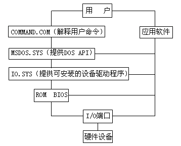

本想开始讨论有关视频的内容，但后来又觉得还缺少一些必要的知识，因此插入了这样一章，目的是为了将有关8086/88处理机的知识补充完整，同时多学一些指令，为后面的内容作些准备工作。我们先来讨论关于子过程设计的一些问题。
主过程往往要给子过程传送过去一些数据，这些数据可能要由子过程处理，也可能是一些命令码控制子过程完成对应的工作；而子过程有时也要将处理结果返回给主过程。在这一节里我们将主要讨论这些信息是通过何种途径在过程间传递的。
这是最常用的参数传递方式，当程序通过INT 21H指令调用DOS API时，传送的参数均在寄存器中，而DOS也会将一些返回值通过寄存器送回。这种技术在编制子过程时也可应用。请看下面的程序，这个程序用于查询键盘上各个键的代码：
ESCKEY equ 1bh ；ESC键对应的ASCII码
CR equ 0dh ；回车键对应的ASCII码
LF equ 0ah ；换行键对应的ASCII码
data segment
assume ds:data
ascii db '0123456789ABCDEF' ；十六进制数所需的字符
data ends
code segment
assume cs:code
main proc far
mov ax,data ；设置DS寄存器
mov ds,ax
mov bx,offset ascii ；BX寄存器指向ASCII表
getkey:
mov ah,0 ；等待键盘输入
int 16h ；调用HEXOUT子过程
call hexout ；是ESC键吗？
cmp al,ESCKEY ；不是ESC键，返回GETKEY处继续
jnz getkey ；选择DOS API的4CH功能
mov ax,4c00h ；结束进程
int 21h
main endp ；HEXOUT子过程
hexout proc near ；保存AX寄存器
push ax ；显示2位十六进制数
mov cx,2
hexloop: ；保存CX寄存器
push cx ；CL寄存器置入循环左移位数
mov cl,4 ；循环左移AL，将高4位与低4位交换
rol al,cl ；暂存AX寄存器以备后面处理低4位
push ax ；屏蔽低4位，保留高4位
and al,0fh ；取高4位对应十六进制数字的ASCII码
xlat ascii ；将ASCII码送入DL寄存器
mov dl,al ；选择DOS API的02功能
mov ah,2 ；输出DL寄存器中的字符
int 21h ；取回AX寄存器
pop ax ；取回CX寄存器
pop cx ；处理低4位
loop hexloop ；DL寄存器送入回车符
mov dl,CR ；选择DOS API的02功能
mov ah,2 ；显示回车符
int 21h ；DL寄存器送入换行符
mov dl,LF ；显示换行符
int 21h ；恢复AX寄存器的原值
pop ax ；子过程返回
ret
hexout endp
code ends
end main
先来讨论程序中出现的一个新指令--XLAT：
助记符：XLAT（Translate）
用 途：换码指令，将AL寄存器中的数据与存储器中数据进行交换
格 式：XLAT
XLAT ADDR
执 行：AL中的数据被位于DS：[BX＋AL]处的数据替代 CPU执行此指令时会把AL中的数作为偏移量从BX指向的表中取出一字节数据并以此取代AL中的数据。这条指令有些绕，应用起来也有些麻烦：
① 设计程序时必须先定义出数据表，并且在使用此指令前先要让BX寄存器指向此表的首地址；
② 由于CPU以AL寄存器作为指针，所以转换表的长度不能超过256字节；
③ 指令的两种格式意义完全一样，ADDR为表格的地址，但在这条指令中它不起作用，只是为了提高程序的可读性而设置的，指令执行时仅仅使用BX中预先存放的首地址，并不用ADDR的值。所以在上面的程序中用户完全可以不输入XLAT后面的"ASCII"，这并不影响程序的正确性。
这个程序并未通过"21H"中断接收按键，而使用了16H中断的0号功能：这个中断并非由DOS提供，而是由BIOS提供的。那么何为BIOS呢？
BIOS是"BASE INPUT/OUTPUT SYSTEM"的缩写，意思是"基本输入/输出系统"。和DOS一样，BIOS是一套软件，但它又和DOS这样的系统软件有区别。从存在形式上看BIOS软件并非存放在磁盘上，而是保存在一片ROM存储器中，这片ROM和其它芯片一样由电脑生产厂商将其安装在主板上，也就是说，BIOS是以硬件形式提供给用户的软件。而且BIOS占据固定的地址空间，在任何一台与IBM兼容的PC机中，ROM BIOS都占据0F000H：0－0F000H：0FFFFH地址空间，共64KB。
BIOS具有两种功能：系统自检与物理设备管理。当我们打开电源或按下RESET时，CS寄存器将被置成0FFFFH，而IP将被置成0，即CPU上电复位后马上就从物理地址0FFFF0H取指令执行，此地址恰好在ROM内。一般的ROM在此位置都有一远程转移指令，CPU将转去执行SELFTEST程序，对机器的各个部分进行检测，确认机器正常后将DOS系统从磁盘上装入内存。
BIOS还能对外设进行控制，我们知道DOS也有管理设备的功能，实际上DOS是通过调用BIOS的功能来完成这些任务的，DOS起到了指挥官的作用，真正受累出力的是BIOS。图5－1表达了硬件、操作系统、应用软件和用户之间的层次关系。

① BIOS虽然占据64KB地址空间，而其实际容量只有8KB，其它空间在IBM原装电脑中分配给ROM BASIC，在兼容电脑中一般空闲不用。
BIOS对设备的管理也是通过中断调用来实现的，其中16H中断是BIOS提供的用于处理按键的实用程序，执行第0号功能时CPU会等待用户按键，并把按键的ASCII码由AL寄存器返回，在我们的程序中我们通过AL寄存器将这个ASCII码传送给HEXOUT，由这个子过程负责将此ASCII码以十六进制形式显示在屏幕上。AL寄存器在这里起了传递数据的作用。